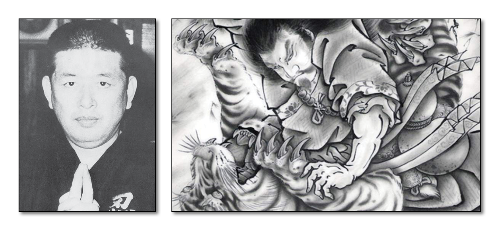

"Tiger Knocking Down School" - Dr. Hatsumi is the 18th Soke
Overview:
This school places an emphasis on using the opponent’s bone structure and skeleton to defeat him. Strikes are generally targeted to areas that disrupt spinal alignment and locks are applied in the same fashion. The schools koppojutsu consists of mostly striking with some joint locks and throws. Also taught in this school are Ken jutsu (sword arts), Shuriken jutsu (throwing blades), and Tanto jutsu (Knife arts). It has been said that this school along with Gyokko ryu form 50% of Bujinkan training because of how well they compliment each other. Koto Ryu uses short distances between opponents – Gyokko Ryu uses long distances. Koto Ryu uses a direct strategy with techniques that are quick and straight to the point – Gyokko Ryu techniques are more complex favoring indirect attacks. Koto Ryu concentrates on striking – Gyokko Ryu on locks and throws. It is thought that the Koto Ryu came from China via Korea, by Chan Busho, a Chinese warrior. The school was eventually passed on to Sogyokkan Ritsushi who was also Soke of Gyokko Ryu and with him the two schools were brought completely together. Regardless of this they were taught and passed on to the next generation as separate schools within the same lineage.
Lineage of Koto Ryu: